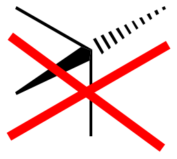
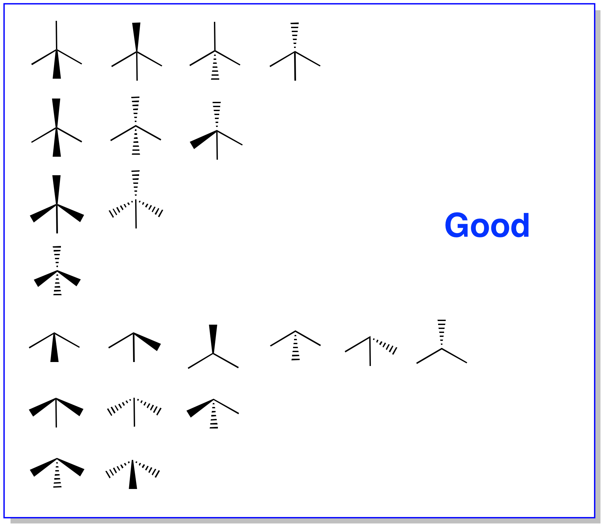
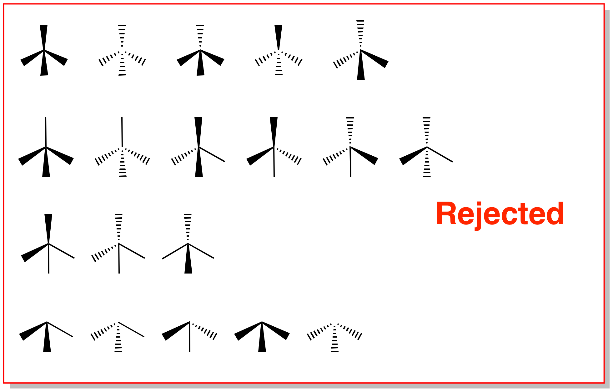
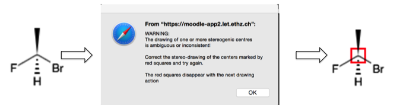

Drawing Stereochemical Indicators in MOSFECCS
- MOSSFECS considers only atoms with at least one wedge bond (stereo-up or stereo-down) as potentially stereogenic.
- MOSFECCS can't deduce configuration from perspective drawings:
- Stereo-bonds with the broad end of the wedge at the stereogenic center are a source of conflicts, they should be avoided whenever possible. MOSSFECS converts them (internally, only for SMILES generation) to wedges with the narrow end at the stereocenter as follows:
- Two different (up and down) stereo-bonds, both with the broad end of the wedge at the stereogenic center are a contradiction and MOSFECCS tries to prevent you from drawing them:
 - Avoid drawing wedges between stereogenic centers. For highly complex multicyclic natural products, this can't always be avoided.
MOSFECCS can usually deal with them.
Graphical Summary: what is ok and what leads to problems


-
When MOSFECCS encounters ambiguous or inconsistent drawing at a stereogenic center during SMILES generation, a warning is issued instead of the SMILES code.
The rejected centers are then highlighted by a red square until you continue drawing.
